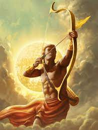

Apollon
DIEU DU SOLEIL, DE LA MUSIQUE, DU CHANT, DE LA POESIE ET DE LA BEAUTE MASCULINE
-
Nom romain : Apollo
Etymologie : Le « soleil »
Surnom : L'Oblique
Père : Zeus
Mère : Léto
-
Au fur et à mesure que la culture grecque se raffinait, Apollon et devenu le dieu préféré des hommes. On multiplia ses
attributions : la musique, le chant, la poésie, la beauté et même le Soleil ….
-
-
Aussitôt après la naissance de l‘enfant, des cygnes venus du Pactole tournèrent sept fois autour de l’île en
saluant l’accouchement de Léto. En mémoire de ce chant, Apollon donna sept cordes à sa lyre et le cygne devint son
emblème : Zeus lui offrit même un char que ses cygnes tiraient !
-
Apollon fut progressivement assimilé par les Grecs au dieu du Soleil. Lumineux par sa personnalité comme par
son physique. Il était reconnu par les hommes parce qu'il ne projetait pas d'ombre. Dieu de la musique, il battait
tout le monde aux concours de chant, de poésie et de lyre. Comme son arbre-symbole était le laurier la couronne de
laurier est devenue l’attribut de ceux qui triomphent. .
-
Apollon aimait les corbeaux, initialement de splendides oiseaux d’un blanc, immaculé. Mais un jour, l'un d'eux
dénonça une maîtresse du dieu infidèle, Coronis. Apollon, outré, transperça aussitôt celle-ci d’une flèche. En mourant,
Coronis révéla qu’elle était enceinte. Apollon sauva le bébé et, repentant, le fit dieu de la médecine afin qu'il la
veille désormais sur les mères qui accouchent. Puis il rendit le corbeau aussi noir que l’action qu'il lui avait fait
commettre. Depuis, corbeau signifie « délateur » !